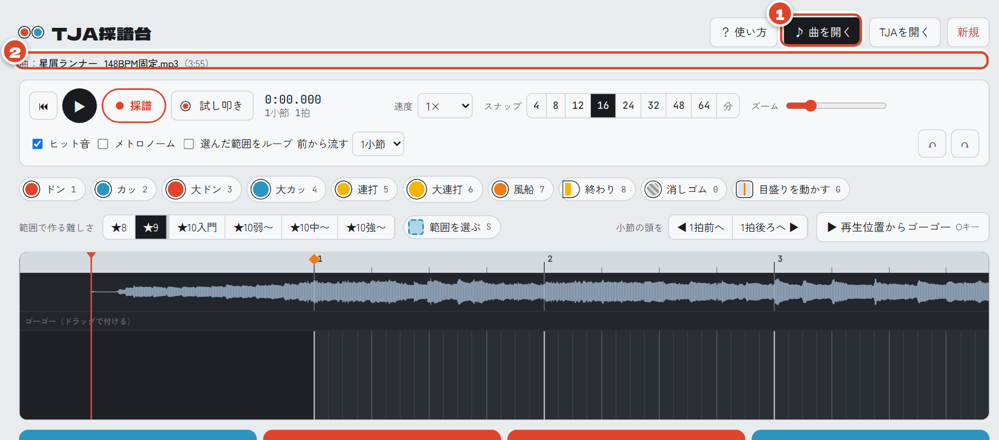
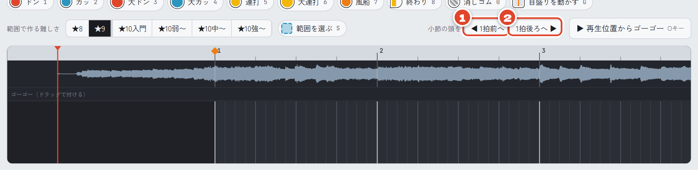
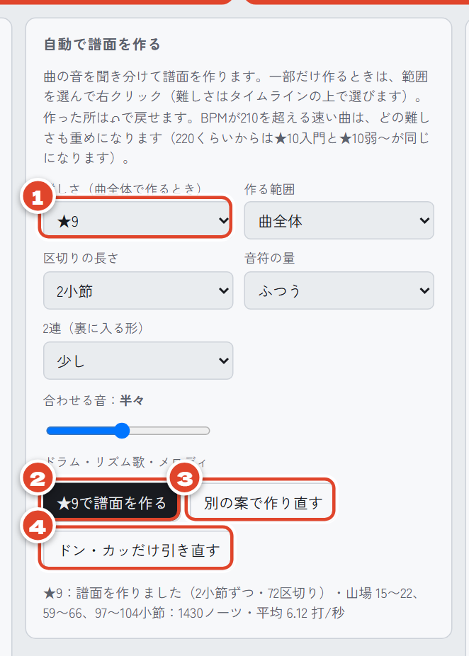
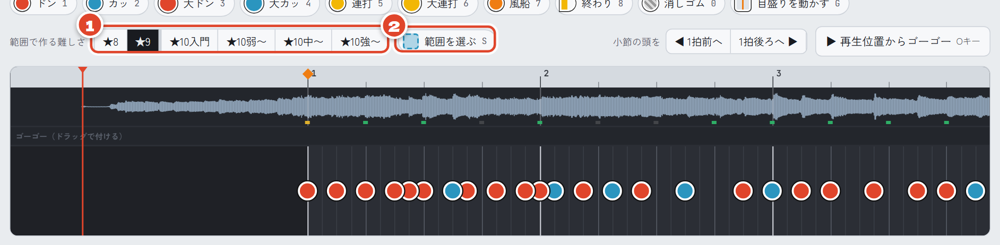
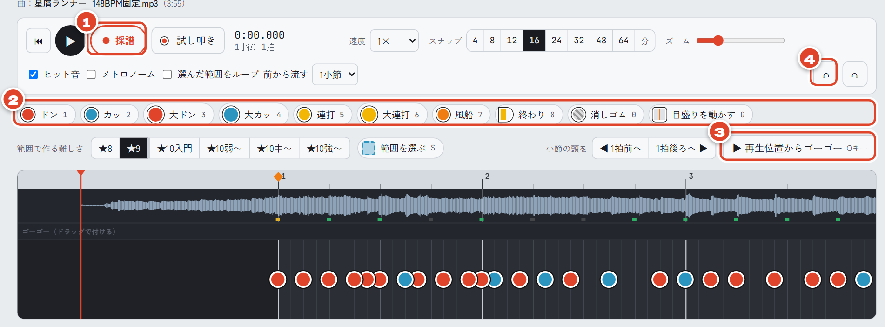
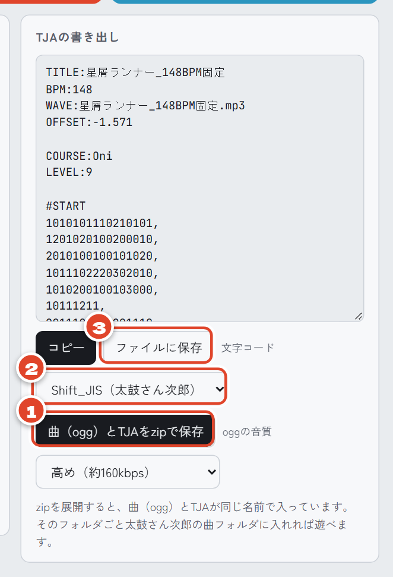

TJA採譜台の使い方：曲を入れて、太鼓の譜面ができるまで
こんにちは、maosun です。
実はもう何年も、太鼓の達人シリーズを遊んでいません。でも15年以上前の高校生のころは太鼓の達人が大好きで、創作譜面を手で一つずつ作っていました。
あるとき、ふとそのころのことを思い出しました。そして「あのころの自分に、こんなツールがあったらよかったのに」と思うものを、今の太鼓の達人ファンのみなさんに向けて詰め込みました。それが、この「TJA採譜台」です。
曲のファイルを入れるだけで、太鼓さん次郎などで遊べる譜面（TJA ファイル）を自動で作れます。ブラウザで動くので、インストールは要りません。しかも無料です！
紹介動画を見てくれたみなさん、本当にありがとうございます。思っていたよりたくさんの人に使ってもらえて、とてもうれしいです！
この記事では、曲を開いてから遊べるようになるまでを、順番に説明していきます。はじめての人でも、すぐにできますよ！例には、僕の自作曲「星屑ランナー」を使っています。
ツールはこちら：https://maosun-dev.com/tjasaifu/
このツールは「太鼓の達人」シリーズの非公式なファンメイドコンテンツです。公式とは関係ありません。
曲を開く
まずは、画面の上にある1「♪ 曲を開く」を押して、曲のファイルを選びます。ファイルを画面にドラッグしても開けます。
開けると、2に曲の名前と長さが出て、タイムラインに曲の波形が出ます。
mp3・wav・ogg・m4a・flac が使えます（Chrome・Edge で確かめています）。ほかのブラウザでは、形式によって開けないことがあります。そのときは mp3 か wav を試してみてください。
ちなみに、曲のファイルはパソコンの中だけで使っていて、どこにも送っていないので安心してください！


小節の頭が1拍ずれていたら直す
曲を開くと、BPM（曲の速さ）と1小節目の位置を、ツールが自動で調べて入れてくれます。テンポがゆれている曲も、自動でテンポを固定します。なので、ほとんど何もしなくて大丈夫です！
ただ、曲によっては小節の頭が1拍ずれることがあります。タイムラインの小節の線（1・2・3…）が、曲の区切りと合っていないときです。
そんなときは、1「◀ 1拍前へ」か2「1拍後ろへ ▶」を押して、線を曲の区切りに合わせてください。


小節の頭は、譜面を作る前に合わせておくのがおすすめです。とはいえ、あとから動かしても、置いた音符は曲に合ったまま残るので大丈夫です。
自動で譜面を作る
いよいよ譜面づくりです！「自動で譜面を作る」の欄で、1難しさ（★8〜★10強〜）を選んで、2「★9で譜面を作る」を押します。ボタンの名前は、選んだ難しさに合わせて変わります。
数秒で、曲に合わせた譜面ができあがります！
気に入らなかったら、何度でも作り直せます！
- 3「別の案で作り直す」：音符の置き方ごと、違う案にします
- 4「ドン・カッだけ引き直す」：置く場所はそのままで、ドンとカッの組み合わせだけ変えます
この欄では、ほかにも次のことを選べます。好みに合わせて変えてみてください。
- 区切りの長さ（1・2・4小節ごとに作る）
- 音符の量（とても少なめ〜とても多め）
- 2連（裏に入る形）を入れる量
- 合わせる音（ドラム・リズム寄りか、歌・メロディ寄りか）


「ここだけ作り直したい！」というときは、タイムラインの上の1で難しさを選び、2「範囲を選ぶ」（S キー）でタイムラインをドラッグしてから、右クリックします。選んだ範囲の外の音符は、そのまま残ります。


手で直す
自動で作った譜面は、手で自由に直せます！
2の並びからドン・カッ・大音符・連打・風船を選んで、タイムラインをクリックすると置けます。消したいときは「消しゴム」です。
- 1「採譜」：曲を聞きながらキーを叩くと、そのまま音符が置けます
- 3「▶ 再生位置からゴーゴー」（O キー）：押した所からゴーゴータイムが始まって、もう一度押した所で終わります
- 4「↶」：ひとつ前に戻します。自動で作った所も、これで戻せます


作業中の譜面は、ブラウザに自動で保存されます。途中でやめても、次に開いたときに譜面が戻ってきます（曲だけは、もう一度開いてください）。
保存して遊ぶ
譜面ができたら、いよいよ保存です！いちばん下の「TJAの書き出し」の欄で保存します。
- 1「曲（ogg）とTJAをzipで保存」がいちばん楽です。 曲と譜面がひとつにまとまって、太鼓さん次郎の曲フォルダにそのまま入れられます。どの形式の曲でも、ogg に変えて入れてくれます
- 2文字コードは、太鼓さん次郎なら「Shift_JIS」、OpenTaiko などなら「UTF-8」を選んでください
- 3「ファイルに保存」：TJA ファイルだけを保存します


zip を展開して、できたフォルダを太鼓さん次郎の曲フォルダに入れれば、自分の譜面で遊べます！おつかれさまでした！
うまくいかないとき
- 小節の線が曲の区切りと合わない：2 の「◀ 1拍前へ」「1拍後ろへ ▶」で合わせてください
- 譜面が速すぎる・遅すぎる：BPM が半分か倍になっているかもしれません。「曲の情報」の欄の「÷2」「×2」を試してみてください
- 叩くタイミングが少しだけずれる：「曲の情報」の欄の「−10ms」「＋10ms」で、少しずつ動かせます
- BPM が合っていない：「曲の情報」の欄の「BPMを計測」を、拍に合わせてタップすると測れます
- ボタンの意味が分からない：画面の上の「？ 使い方」に、ボタンとキー操作の説明があります
さいごに
使っているところは、動画でも見られます。
「ここが使いにくい」「こういう機能がほしい」などがあれば、動画のコメントで気軽に教えてください。みなさんの声を見ながら、少しずつよくしていきます！